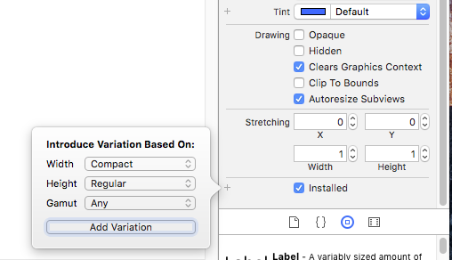
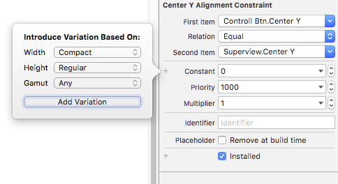
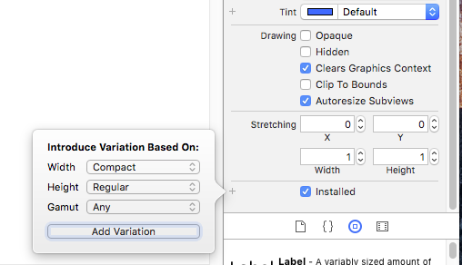
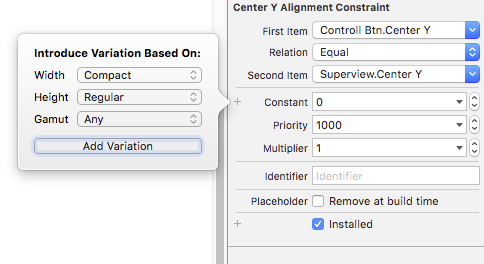

SizeClasses
SizeClass并不是对控件进行布局而是用于区分不同的屏幕尺寸
SizeClass之所以能适配所有型号，就是因为三个属性Compact(紧凑),Any(所有),regular(常规)。
适配不同设备的xib
创建适配不同设备的xib

Install选项勾选即可选择这个控件是否在此类设备中显示而左边的得弹框则可以选择此类设备是指:通过选择Width 和 Height 可以选定 是ipad 还是 iphone
创建针对不同设备的约束

SizeClass并不是对控件进行布局而是用于区分不同的屏幕尺寸
SizeClass之所以能适配所有型号，就是因为三个属性Compact(紧凑),Any(所有),regular(常规)。

Install选项勾选即可选择这个控件是否在此类设备中显示而左边的得弹框则可以选择此类设备是指:通过选择Width 和 Height 可以选定 是ipad 还是 iphone

Copyright © 2015 Powered by MWeb, Theme used GitHub CSS.